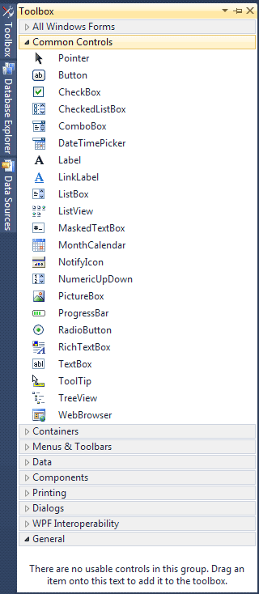
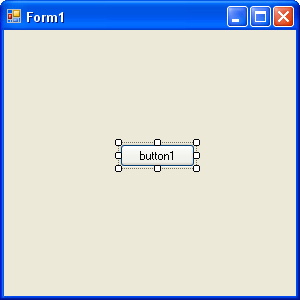

Adding Controls to a Blank C# Form
The first thing we'll do is to add a button to the blank form. We'll then write a single line of code, so that you can see how things work.
If you want to add a control to a form, you can use the Toolbox on the left of Visual Studio. Move your mouse over to the Toolbox, and click the plus symbol next to Common Controls. You should see the following list of things that you can add to your form:

Click the Button item under the Common Controls heading. This will select it. Now click once anywhere on your form. A button will be drawn for you, and your Form will look like this:

(You can also hold down your left mouse button and drag out a button to the size you want it.)
A button is something you want people to click on. When they do, the code you write gets executed. The text on the button, which defaults to "button1", can be changed. You can add anything you like here, but it should be something that's going to be useful for your users, such as "Open a text file", or "Calculate Now".
We're going to display a simple message box when the button is clicked. So we need to add some text to the button. You do this by changing something called a property. This is quite easy, and you'll see how to do it in the next part of this lesson.